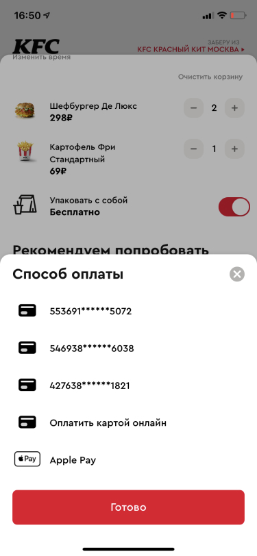
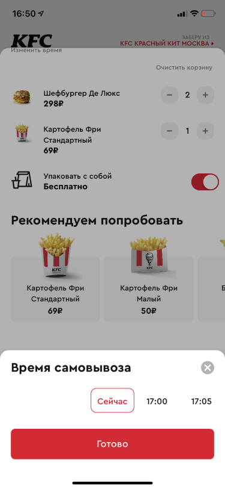
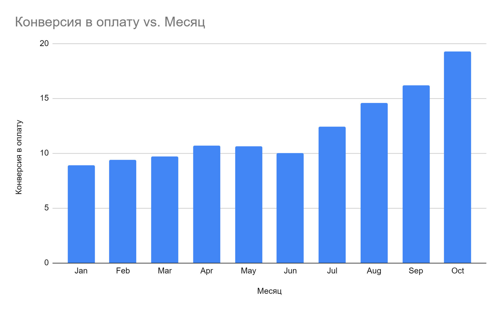

kfc-app
2021-03-15
Mobile application for KFC restaurant chain. The app allows customers to order food, track delivery, and manage their loyalty program.
Key Features
Checkout Process
The app features an improved checkout process with better user experience.
Payment Methods
Multiple payment options including cards and digital wallets.

Order Tracking
Real-time order tracking with delivery status updates.

Results
The new app design led to significant improvements in user engagement and conversion rates.
Analytics
Conversion rate improvements and user behavior analytics.
